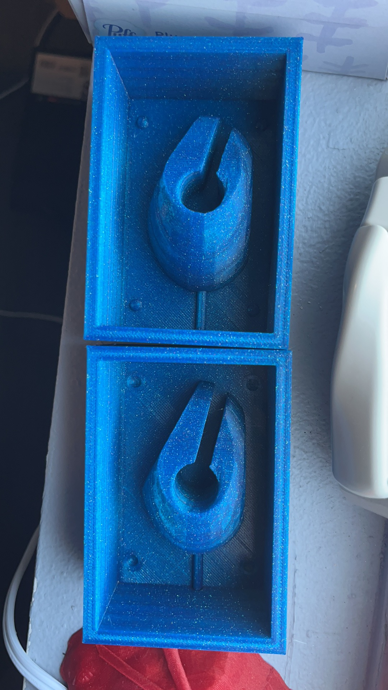

Part A
Recap: this is how the lamp looks like last week:
To finish the lamp from last week, I tried to print a cover for the lamp. I used "Sweep1" to produce a "fire-shaped" cover. The reason that I could not create a more complicated "fire" is that the hole I left last week was not big enough and there was a sword standing besides the hole. When trying to make the cover fit on the base, I started with adding 4 "legs" under the "fire-shaped" cover. However, after several failed test prints, I noticed that the legs could be broken easily as the thickness limited by the space left in the hole was not good enough. As a result, I made the cover to exactly fit with the light bulb's size, which equals to the size of the hole, so that the cover could fit and sit on the base.
Lamp cover in rhino:
Bottom of the lamp to hide a part of the wire:
How it looks like: sorry for the bad color match. The "golden" filament I purchased was terribly wrapped and made my 3d printing stuck and failed for 3 times.

Part B
I was thinking to have a wooden fish for my final project.
I used BooleanSplit to cut an ellipsoid and got the shape of the woodenfish. Then I cut it in half and put each of them onto a surface. Then I added the keys and the pouring hole as raised objects.
The mold of the mold of the wooden fish in rhino:
Here's how it looks like after 3d printed for 10 hours: 
Here is the stl file.